![[ TABLE OF CONTENTS ]](../gx/indexnew.gif)
![[ FRONT PAGE ]](../gx/homenew.gif)


An Ode to Richard Stallman
(Or Minutes to the NYSIA/WWWAC Software Summit)
I recently attended the New York Software Summit held at the Fashion Institute of Technology (FIT) in NYC. This was a joint conference sponsored by the New York Software Industry Association ( www.nysia.org) and the world Wide Web Artists Consortium ( www.wwwac.org). I, being a subscriber to the LXNY mailing list ( www.lxny.org), was informed of this event by Jay Sulzberger, who was moderating a panel titled "The Free Software Movement, Open Source, and the Coming Free Market in OSes". I found the subject of this panel to be rather close to my heart, but being a 70 mile commute into NYC for me, I thought I would pass it up. I read the rest of Jay's announcing e-mail and saw two words which would eventually changed my mind. Richard Stallman. He was going to be on the panel and as it turned out, this was too much of an incentive for me to pass up. What follows is probably too much text to describe the event, but then, I'm drawn to the subject and I can't help myself. So please forgive my indulgence.
Day -1) It was a busy day for me. Rather a busy week for that matter. I have just started working on this new experiment called PHENIX, which is supposed to take data in 6 months. The experiment is 5 million dollars short, and with the engineering run coming up in 6 months, things are rather hectic. I remembered Jay's email about the software summit and pulled it up. I was still in my debating phase as to whether I should go or not (event though I knew Richard Stallman was going to be there) and with my current work load, I was starting to lean towards not going. I read through Jay's latest announcement and realized that the closing date for registering for the conference was today, at noon. It was 11:50am!!!! Oh God, I had to make a decision NOW. This was hard. The arguments were flying around my head. "The timing system must be worked on." "Richard Stallman." "It's a critical component of this detector and rather late." "Richard Stallman." "I worked all day yesterday and this morning on the system with two engineers at my side and we made a lot of progress." "Richard Stallman." "I would get a lot done tomorrow by keeping up the momentum on this project." "Richard Stallman." "The run is only 6 months away." "Richard Stallman." "Well, the run is 180 days away, one day off is less than a 1% effect." "Richard Stallman." "Screw the timing system I'm going...." 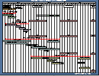 So I grabbed the phone, and called one of the two numbers. It was busy. I call the other number, I got a recording to leave a message. (It is now 11:58am.) I left a message saying that I wanted to register. I then pulled up their registration web page. It was still active. I quickly filled it out, hit the submit button and some reassuring text appears saying that I have been registered. I know information technology better than that and decided to call again. (It's now 12:02pm.) I was able to get through and told the lady that I had just registered on the web and I wanted to get some kind of confirmation that my registration went through. She told me this could not be done for reasons which were too involved to go into now. Oh well, I did my best. I continued working on the timing system that afternoon.
By early evening I went back to my office and I got a phone call from a one Bruce Bernstein, who asks me if I'm his cousin. Bruce is the main organizer of this summit and his cousin is Stephen Adler, a particle physicist who works at the Institute of Advance Study in Princeton NJ. It turns out that there are two Stephen Adlers in High Energy and Nuclear Physics. This guy from Princeton and me. And Bruce is this other Stephen Adler's cousin. There are some cosmological forces going on here which confirm that I really should go to this summit. It was good that he called because I explained to him my rush to register for this conference at noon today. He say's "You registered on the web right?" "Correct," I reply. He say's "What? You don't trust the web?" I didn't want to reply to that. I did get what I wanted, verbal confirmation of sorts, from the summit organizer no less, that I was registered. I was ready to go.
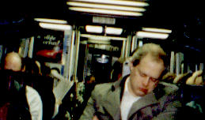 Day 0) Up at 5:20 am. I wanted to catch the 6:25am LIRR into Penn Station. My commuting routine is working better. (See my article on Fall Internet World 98 for details.) I got to the train station with my new notebook in hand, with time to buy a bagel, coffee and catch a seat on the 6:25am express to Penn. My intent was to jot down some thoughts, as I was riding into the city, on my new notebook. But there was a problem. You can't type on your notebook, drink coffee and eat your bagel at the same time. I'll get this commuting thing right some day. The typing had to wait. I ate my bagel and drank my coffee, then fired up my notebook to jot down some notes. This was more of an experiment to see how well one can use a notebook on crowded trains. (The guy to my left decided to sleep in such a position as to pin my left elbow, making it rather challenging to type. I managed.)
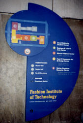 I found the registration center which was in the lobby of building A. I went to look for my badge, and it was not there. They told me to go to the problem desk. The line at the problem desk was just as long as the line to get your badge. The lady at the problem desk looked and me and said "Sorry, I can't find your name anywhere. You must register with a personal check." "I have no check and I registered on your web site, check again" I demanded. Another shuffle through some hand written pages of "last minute" registrants and no Stephen Adler. Just then Bruce shows up. "Stephen Adler?", he looks at me. "I saw Stephen Adler on a list somewhere" he conjectures. "Just write him a badge" he orders the problem desk lady. And so it goes, the free software Gods implanted an image of my name on a list somewhere in Bruce's brain last night, and thus I get my hand written badge, reading "Stephen Adler, B .and. L". This is my ticket in, and I don't care if it should read, "Stephen Adler, BNL". That's BNL for Brookhaven National Laboratory. It has a rather Fortran look and I figure it must be a joke by the same free software Gods who got me to attend this meeting. (Physicists tend to write too much Fortran code anyway.)
The summit was organized around the following format. Two parallel breakfast sessions, one for the NYSIA and one for the WWWAC. Two morning parallel tracks, a lunch with key note address, one afternoon parallel track, and a plenary with a keynote panel at the end. Stallman was going to be on the 11:15-12:30 panel on free software and the keynote plenary panel at 3:30-4:45.
I took off up to the 6th floor to attend the NYSIA breakfast panel. The first of two keynote speakers was Steve Malanga. His topic was trying to analyze the city of New York and why it didn't have more of a software industry. The talk was rather boring and bureaucratic. Lots of charts showing job growth over time, how NYC was able to gain back the number of jobs it lost during the last recession, etc. He was trying to point out that there is a big software industry in NYC but under a different name. Wall Street. (i.e. Wall Street recent hires account for a large technology sector.) Around me were about 100 people, and I had one of two notebooks there. An indication of the backward technology culture of NYC. The 6th floor, where they were having this panel, was the dining area of a cafeteria. There were long tables with white tablecloths and plastic chairs in the room. The architecture of the place gave it a bit of a 1970's look and feel. When I got there, the panel had started and I was proudly pulling out my notebook. The problem now was the tablecloth. I had set down my coffee cup on the table, and baglet to its side. (As in a little 2 inch bagel. Why not, applets, servlets, baglets, what's the difference.) The chairs were one against another so as I tried to get into my chair, the domino affect caused the two chairs to my right to push up against someone else's chair. I then sat down and as I pulled my notebook out of my bag, this shifted the table cloth around and almost spilled my coffee on my notebook, ugg.... Food and notebooks in tight places don't mix. Eat your food and then deal with your notebook. Or get a firm table, firm chair, no table cloth and keep your coffee as far away from you notebook as you can reach. I have this recurring nightmare of spilling coffee all over my notebook. It's going to happen, it's just a matter of time. In any case, let me get back to the talk. It was boring, so I left to the Java breakfast. The Java breakfast was better. The speaker, David Gee, works for IBM and is passionate about Java. He said so in his talk. One interesting note from his talk was that he claimed that NT systems were up 97% of the time. I'm not sure if this was a good or a bad thing, but the number was clearly pasted on one of his .ppt pages. Then there were things which bothered me about his talk. He was over selling java. He kept talking about how he wanted to have all information accessible to him at all times, where ever he was in the world. And he kept using the airline industry as his best example. He wanted to know those important things like; What is the model of the plane he was going to fly on? What is the seating layout on the plane, so that he wouldn't get a seat where the window wasn't just so. What was the latest stock quote for e-bay? And he wanted to get all this information from his notebook plugged into the RJ45 outlet in his hotel bathroom. This type of over trivialization of information technology tends to kill the application you're trying to sell. This guy then pops up a .ppt page with a picture of a shrink wrapped java development package on the screen. He says "I am not plugging or selling this product...." and then rattles off a full list of the features of this software package. With that bit of hypocrasy, I packed up my notebook and headed out.
The first track of parallel sessions was going to begin soon, and I chose to attend the digital music one. One of my colleagues had told me about mp3.com a couple of days ago and I realized that the music industry was going to be turned on its head within a year. It turned out to be where the NYSIA breakfast panel was held. So back up the elevator I went to get an ear full of digital music talk.
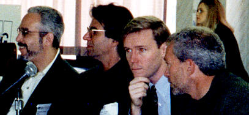 There were 4 panelists. Nick DiGiacomo, a consultant, Michael Robertson of mp3.com, Howard M. Singer a2b music, Dick Wingate, liquid audio. The discussion was good. I was planning on just attending this panel for a short while and then go off to other panels and talks, but the discussion was so good and of relevance to our life on the Internet that I stuck it out. The deal with digital music is the following. The bandwidth and compression algorithms have converged such as to allow the free availability of CD quality music over the Internet. This is very much to the tune of open sourced software about 10 years ago, but now the general public is getting into the act. The problem; a large, powerful, wealthy establishment is fighting very hard to control its market and preserve the status quo. Three of the panelists, the guy from a2b music, the guy from liquid audio and the consultant are clearly trying to work with the industry. They talked on and on about how to restrict content. On the other hand, Mike Robertson from mp3.com made a very brave statement. He said that talking about security was like talking about morality. You cannot talk against it. But he continues to say that it is impossible to try to restrict the distribution of music. He then says that freedom over content will rule the market. Talk about security is nonsense and driven by the oligarchy protecting their business model which is music distribution via CD. The audience applauds. (The only applause during this session.) What I got from this session is clear. Battle lines are forming on the distribution of digital music over the Internet front. On one side you have you, me and the artist, on the other side you have the rich and powerful establishment. The establishment is working hard to introduce "security" into the distribution of music content. "Security" only deals with how one can restrict access to the content. It has nothing to do encrypting the music itself. (I'm not sure how you would restrict access without encrypting the music itself.) This was emphasized by the consultant. This will be done by adding restriction signatures to the music. For example, a two day license for a song would work such that you download the music, your hardware gizmo or software applet plays it for two days and then plays it no more. The control of who and for how long one can listen to the music is under control of the artist, or so says the industry consultant. Reading his lips, I hear, the music is controlled by those who sell it, those being the establishment. And it's clear that the establishment is starting to wake up to the fact that distribution of music over the Internet could very well destroy their whole business model, and them with it. MP3.com is on the road to changing this. It has a 50-50 deal with the artist for what ever is sold over their web site. And the artists keeps ownership of their work. Right now, when a band cuts a record, the music is then owned by the recording company and belongs to the band no more. The band then gets about a 20% cut of the sales. Also, a band must sell more than 250,000 CD's in order not to get dumped. These are very large obstacles for bands to overcome in order to get their music heard by the general public. And guess what, the new music I hear over the radio and on MTV all sounds the same. To me, this is a clear fallout of the restricted access musicians have to the general public, set up by the music industry. But the Internet and web sites like mp3.com will change all that. Another point made by the Mike Robertson from mp3.com, the record industry is not going broke with the current method of music distribution via CD. It is making lots of money. So to them, it is important to maintain this status quo. Clearly, the Internet has the power to change all that. Other side issues which were discussed were audio formats. a2b and liquid audio were all hot about their standards, those being closed ones. The guy from mp3.com commented that open standards win on the Internet and I'm sure time will bear this out. There was more to the discussion which I cannot remember and I failed to write down in my notes, but it was a good prelude to the next session I was going to attend, the free software panel.
The free software panel was being held in building C and I was in building A. So down to the lobby I go in search of building C, somewhere on the campus of this Fashion Institute of Technology. In the lobby, I find Jay Sulzberger at the problem desk. It looks like web registration technology failed him as well. Jay is the moderator for the free software panel and who also invited me to be a panelist on another panel held last fall for one of the LXNY meetings. The subject of that panel was something like free software in your business. It was my first chance to talk about my work to a non-physicist audience and I jumped at the chance, even thought the subject was not physics. I figured I used enough free software in my work that I would be able to fit that topic in somehow, amongst my aerial photo transparencies of high energy physics laboratories across the nation and the world. So, as implied in what I just said, I have already met Jay. I waited for him as he finished up with his problem at the problem desk, (web based registration technologies, hmmm....) This gave me a chance to walk with him over to building C in search of the classroom where this free software panel was to take place. On the way we chatted about something, I can't remember if it was quantum computers, free software or his admitting to being a gun nut, as is someone else who is an acquaintance of ours.
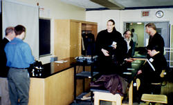 We found building C, we found the 3rd floor and room C324, the room where Richard Stallman was to grace us with his presence. Richard Stallman was not there when Jay and I showed up. The rest of the panel and about 20 people who made up the audience were there. The class room was wide and set up in such a way that the desks were close to where the speakers stood to address the class. The desks were these long tables with a black hard surface table top, no tablecloths. These tables were certified notebook friendly. The chairs were high and rather comfortable. They kept you at attention as you sat in them. I got a chair two rows back from where the speakers were to address the audience, centered in the room. I wanted to be in the center of this room in order to absorb all that was to transpire. I set up my notebook, popped open the netscape browser editor window, and Jay came over to continue his talk about quantum computers. I think this was just an excuse to come over and checkout what kind of software I was running on my notebook, since I noticed his subtle glance towards my notebook screen as he leaned over to tell me about NMR probes, coffee cups, statistical mechanics and how engineers can make work what physicists dream up. (Which is true, sometimes...)
Things start to settle down in the classroom. I notice that most of the people who made up the audience for this panel discussion are guys like you and me. We don't wear formal clothes. We have a solidity and ruggedness in our manner. Jay definitely is heavy on the ruggedness side. We have thoughts to be shared and passion in our hearts about the work we pursue in our daily lives. But to counter balance this atmosphere of technology pioneers, there were about 3 or 4 guys who sat together towards my right in the back corner of the class room. These guys stood out. They were formally dressed, each one. They have a fragility to their manner. It's different with these guys. They obviously have thoughts to be shared, I can't really account for the passion in the heart, but they do have something the rest of us don't. Money in the wallet. Lots of money in the wallet. These guys are "the establishment" and will play a very interesting role in the events to unfold.
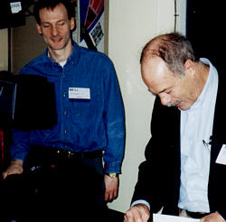 So there I sit, waiting for the panel discussion to start, Jay is outside trying to give away free software to anyone who walks by the classroom door, and we are all waiting for Richard Stallman to show up, so that we can start this damn thing. Jay has now scared off half a dozen people who were unfortunate enough to have walked by the door, and has given up waiting for Richard. Jay begins. He tells us a story about how the free software movement started with Richard. Back some time ago at the MIT software labs, Richard was trying to print to some ding dong printer and couldn't. There was a software bug which stood between him and his printout. Richard wanted to solve the problem by getting the source code and fixing it. He couldn't, the source code was not available and more important, could not be made available because the company who sold MIT the printer would not hand over the code. The code was locked up behind legal doors and Stallman was not going to be able to solve this problem. Thus the beginning of the free software movement which has evolved into what we know today. With that story told, he introduced the panelers who were present. Jesse Erlbaum, a man who wrote or uses object oriented perl extensions, Elliotte Rusty Harold who is an XML expert, Jim Russell from IBM, who is "a herder of serious cats", and Dave Shields, also from IBM who would talk a bit about Jikes. Jesse, the perl guy and the XML guy went first in introducing themselves. The first one talked about how he couldn't do his work without source code available software. The second guy talked about how XML will be a replacement for a lot of file formats including RTF. One of the big problems with word processing is that for all practical purposes, file formats are not convertible thus forcing you to buy the software in order to read the file. An MS business model no doubt. XML will fix all that. Then went the two guys from IBM. The first one talks about Jikes, how IBM was able to release the source code to the Internet (but under a restricted license agreement which I'll go into later), and the /. effect. Once Jikes was released, there was a post to slashdot about it and the Jikes upload site experienced that /. effect. The Jikes project went from #5 on the IBM upload list to #2 in two weeks. He showed a nice plot of the integrated number of downloads of Jikes for different platforms. It looks like the windows version was released first. 15 days later, the linux one was released and about 5 days after that, it over took the windows binary upload count. IBM now has hard concrete data to show the linux does count! The second IBM guy, Jim Russell, talked about how it was not so difficult to convince higher management at IBM, that it made good business sense to release the source code to something like Jikes, and thus earning Jay's title of "herder of serious cats".
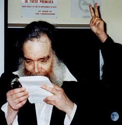 At some point during these introduction talks, Richard Stallman walks into the room. I get to see the man for the first time in flesh and blood. He stands about 5 foot 5 inches, has long black hair and a beard. He carries a cloth bag in which, as I later learned, he keeps a notebook, amongst other personal objects. He would melt right into any university setting, (or high energy physics laboratory for that matter). He starts to clown around with Jay. He starts making horn signs above his head from behind, as Jay continues to read his introductory remarks for the next panelist. 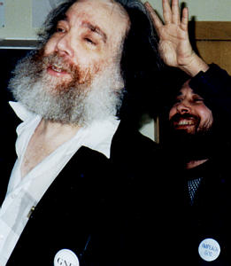 This goes on for a bit and the audience is getting a real kick out of it. Finally, Jay turns to see Richard, he freaks and this kidding around ends. Jay continues with his introduction and Richard starts to make himself at home in the classroom. Off go his shoes, out comes his notebook, and he finds a quiet place under one of the tables where he fires up his notebook and begins hacking at some code or other. Jay continues with the introductions, the panelist continue with their opening remarks and Richard is oblivious to all this. He gets up from under the table, paces back and forth around the entrance to the class room, (in his socks,) getting ready to address his audience. It's like he is doing mental laps, warming up for the upcoming discussion on free software. (Don't forget, we have the establishment sitting in the back right corner of the room. It's going to be Richard vs the establishment.) Jay finally gets around to re-introducing Stallman. Stallman starts by saying that he is the president of the Free Software Foundation. He continues by saying that he is not speaking about the "open source" movement, and he does not care about making computers easier to use. At this point, I sort of lose the specifics of what he has said, (since my notes are rather jumbled) and I will try and paraphrase what he said. Basically, his concern is on a global social historical scale. The free software effort is about freedom, not software which costs nothing. A freedom which goes beyond source code and into the way we interact as a community. Free software is a manifestation of this freedom and is an example of it. 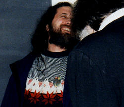 I think it's best to see this in the opposite sense. When you are encumbered with software which you cannot change, even if you have the source code in front of you but are not allowed legally to change and distribute the changes, then your personal, inherent freedom has been taken from you. That same freedom the US constitution gives you which is the right to life, liberty and the pursuit of happiness. Some other important points which Stallman says during this discussion is that people confuse Linux with GNU. Linux is only the kernel, and works in conjunction with all the software on your PC. I would describe Linux has being the conductor of a symphony. The musicians are all the apps we run, and GNU being the concert hall itself, which with out one cannot have a concert. (This is my metaphor, not Stallman's, but I think Stallman was trying to get this point across.) He does not like web sites which are set up for the public good which run add banners. (I think he is talking about sites like /., linux.org, etc.) And he pointed out that he runs debian GNU/Linux on his notebook. (Which fits right in with his persona.)
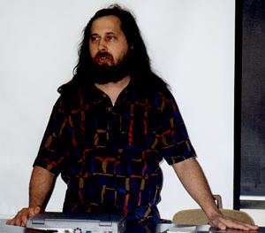 Stallman's introductory remarks never really end. The more he talks about the freedom of software development, very much on the same plane as freedom of expression, the more the intensity of the room discussion heats up. The best word to describe the rising level of the intensity of the discussion is passion. And there was lots of it. The passion level took a step function when the "establishment" chimed in. The elder of this group asked the question, what if MS opened up windows 98 source code under the GPL? At this point in time Jay was out in the hallway offering free software to some innocent person passing by, hears this, jumps back into the classroom and exclaims, "What? Open Source Windows!", and just about collapses on the floor. The question needed to be answered, the room goes silent and Jay takes the floor to answer the question. The question being more broadly if MS would continue to make money if Bill Gates GPL'ed the source code to windows '98. Jay's answer is no. There is a free market economy which you must deal with and in such an environment, Microsoft would perish if it GPL'ed its OS source. He continues by emphasizing that justice would be served and the company would die a rightful death. (Jay also holds this sentiment for Apple.) Stallman forces his way into the discussion; No, MS would be redeemed if it GPL's its source code. Jay has a fit. Jay exclaims that MS and Apple should both die. MS would have to live through a million cockroaches lives before it could be considered for a redeemed life! But Stallman is adamant. MS would be redeemed if it fully GPL's its source. But Stallman if firm, MS cannot take half steps and do something like IBM did with Jikes and just release the source under a restricted license. Its full GPL or it's worthless. In the meantime, the guys in the establishment corner are trying to force the issue that one cannot make money on software if you release the source code. The back and forth on this subject goes on, issues such as opening up file formats to help free up the software industry rise and are batted around. Jay finally ends the discussion since we have run out of time.
As the session ended, people broke up into smaller discussion groups. I packed up my notebook and headed over to the group which surrounded Richard. There was one female who had his attention at the time. (I think there were 3 in the room.) She was a reporter of sorts, from England, trying to get some private time with Richard for an interview. He was all booked up and really wouldn't give her the time of day. I don't know why, she was all in a tizzy to get time with Stallman, and she was full of spunk too. (I think she would have given Stallman a better writeup than I'm doing now...) Somehow the discussion started on Linux vs GNU and the confusion thereof. This gave me a chance to butt in and I asked Richard about his kernel. "Yes, I have a kernel project called the GNU/Hurd". I knew about this project already, but I just wanted to get a word in. "So what happened to it?", I asked. He starts to tell me about some of the key architectural features of his kernel and clearly it was a big complicated implementation of a distributed kernel. I guess any type of distributed kernel would be complicated and thus it seems to have not made much progress. He made a comment that he did find one guy who has actually tried to run it. One of the "establishment" guys was there listening in on this discussion. The conversation then turned to patents. I made a comment that patents are there to protect the "investors" and not really the inventor. Richard agreed with me. The guy from the "establishment" tried to argue that patents are there to protect the inventor and to help market the inventions so that the general public can benefit from them. He continued, "if you could write software which would cure cancer, then a patent on it would get the cure out to the masses." (I'm paraphrasing here...) My comment was that in principle, this is what you would argue, but in practice, the inventor gets a very small piece of it. Its the large corporations and those who run them, who end up owning patents and who get the profits from such patented inventions. I continued by telling Richard that I, working for the Department of Energy, signed a work contract which had a clause in it that said that all my ideas would belong to the government. The federal government now owns all the intellectual properly which comes out of my brain. And if there are some kind of patent rights given to me, the lab makes no effort in telling me what they are, since I have no idea if I have any such rights. This must be the case with a lot of research firms across the world; Lucent, IBM, etc. The discussion continued further in terms of how we can try to protect ourselves from the "establishment" abusing the patent system. Finally I stuck out my hand and introduced myself to Richard and told him I wanted to thank him for all the good he has done for the software community. He shook my hand and then turned to this "establishment" guy who was leaving and said that he was going to work as hard as he had to, to defeat him. He said this in a raised, angry and attacking voice. I was taken back by the strength in his conviction. It was genuine though. I then wandered off to another small group, and talked to Jim Russell. I introduced myself and asked the question, "Why do we get so passionate about software?". The idea being that, those who write software and publish it on the Internet should do so and that's it. What's all the fuss about? We talked a bit more about distributing source code. I stuck around a bit after that, but finally decided that I better get back over to building A and get lunch. Lunch was included in the registration fee and I was not about to miss out.
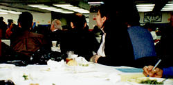 I got to the cafeteria where lunch was being served. Not bad, they had real plates and silverware, unlike the BNL cafeteria which now serves everything on paper plates or plastic containers, with plastic utensils. As I got there, everyone had already eaten and the keynote speaker was starting to deliberate. He is NYC Comptroller Alan Hevesi, talking about the woes of the software industry in NYC. The city is in 9th place across the country when you measure the software industry on a per-capita scale. Some of the comments which stuck in my mind are the following. (I didn't take notes on my notebook since I wasn't about to open it next to my chicken lunch. There was the remainder of a large coffee spill on the table cloth next to me. That could have been on the key board of my notebook. Ahhhh....) NYC had to pay out $900,000,000 to the new york stock exchange in tax exemptions to keep it from moving to NJ. The speaker blamed that on those attending the summit since the attendees had made it is so easy for anyone to set up an information system anywhere to do their business. The EZpass system is a wonderful piece of technology which allows traffic to flow past the toll booths surrounding Manhattan. But, this means that the toll collectors are out of a job. The speaker was quite sensitive to the dangers of high tech information systems. In a few years, there will be no more phone operators. 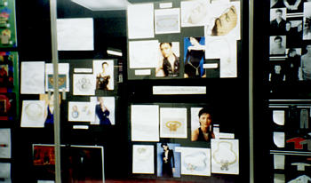 There will be one recording serving all business and those who worked at those jobs answering phones will be looking for other work. Another comment he made was that a new tax break was being put on the books. Anyone in NYC who uses hardware to write software, does not have to pay taxes when they purchase that hardware. This statement caused a great round of applause. Another comment the speaker said which I want to share is this. (It is taken out of context but it stands on its own.) When the phone system was being installed in Russia, Stalin gave orders not to install phones in every home in Moscow. Stalin was afraid that he would loose control over the exchange of information amongst the citizens, if they had access to phones, and thus his control over the citizenry and his hold on power. To me, this was a very insightful comment about the power of information technology and ties right in with another article I wrote a couple of months ago.
And so the talk went. I had my fill of a tasty chicken dish, listened to this guy go on about the lack of a recognized software industry in NYC, and had a very nice view of some 1920's looking architecture outside the window I was facing. One last note on lunch. To my right, I overheard some guy mention slashdot. As I looked over, I saw this young guy, who was wearing a netscape pin on his blue sports jacket. He was talking to an old guy, (60's or so, "establishment" looking guy) and told him that he checked out slashdot about 4 times a day. This older guy, who had his back to me, was writing something down on a business card. The URL of /. is my guess. So there you have it, the young teaching the old on how to survive in this Internet world...
After lunch was the 3rd parallel track. I went to the talk on CORBA. I did so since I've just signed up to the ORBit mailing list and I'm in the process of learning how to develop distributed objects using IONA's implementation of the CORBA standard. The talk was given by an IBM'er Jason Woodward. He was excited about CORBA technology and how IBM was using it in conjunction with Java. The talk was laced with comments plugging IBM's e-business solutions, but if you ignored that, you got a rather general overview of distributed object computing. He talked about the battle lines being drawn between MS version of this application named COM and CORBA/Java. The talk was given at such an abstract level that it never answered my perennial question, where's the ORB in CORBA? (Being that I'm new to this distributed object thing, knowing which software component does the ORBing is important to me. It all seems to be hidden in "the implementation".) In any case, I asked a question at the end, (a rather loaded one) which was, "Is COM a strict open standard and how will the open source movement, implementing the CORBA standard, play out in the future of CORBA?" He answered by saying COM is not an open standard, and open source will do good things to CORBA. Just what I wanted the audience to hear, especially since during his talk he gave the well worn example of betamax vs VHS. Betamax being the proprietary standard and VHS the open one. Thus the answer to my questions were seen in a more compelling light. CORBA would win, MS would loose.
The day was winding down, the 3rd set of parallel sessions was over and now it was time for the grand finale. The keynote panel on the future of the Internet/software industry in the next 5 years. Richard was going to grace this panel. Needless to say, the panel discussion turned into a passioned debate over free software. What do you expect with Richard Stallman on the panel. The panel took place in some big auditorium in building C. There was room for about 500 people and I would say there were about 200 people there. I got there about 10 minutes before it began. I spotted Richard Stallman pacing around, getting ready to take us on. Later, I saw him sitting alone behind the panelist table typing away on his notebook. Taking advantage of some quiet time to hack at his hurd kernel maybe? It was a calm before the storm.
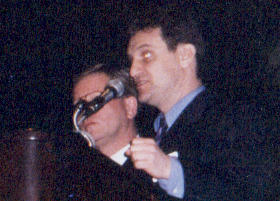 Bruce Bernstein took the mike, called on every one to sit down so that the panel could begin. He then introduced himself and continued with an award presentation to Sheldon Silver, a speaker of the New York State Assembly. Speaker Silver had the flu, so Robin Schimminger, Chairman of the Assembly Commerce on Economic Development took the award for him. 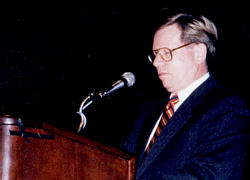 The plaque was to thank Sheldon Sliver for making it possible to get this new hardware tax break onto the books. Bruce was very proud of his award. It was a nice big shiny plaque. Robin, who took the award, made some remarks which I can't remember and left. Bruce then introduced two moderators, who would lead the discussion, Tom Watson and Jason Chervokas, co-founders of @NY. 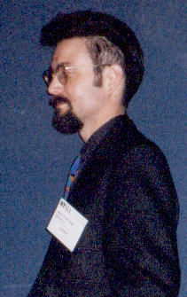 The first one introduced the panel, Stallman, Jim Russell, the same IBM'er who was also on the Free Software panel, John Borthwick, someone associated with AOL and the development of ICQ and finally Gerry Cohen, CEO of IBI, an "establishment" guy. (I'll explain later.) The second guy from @NY, starts the discussion by asking a question to Richard. Richard ignores the question and makes a comment criticizing the award given to speaker Silver for the tax break. "Tax breaks are bad" and goes down some tangent about how local and state governments screw the poor in order to offer corporate welfare to the rich "establishment". I guess you had to be there to feel the embarrassment of the situation. Stallman had no quandaries ripping apart this shining moment which Bruce had polished up by giving away this plaque with great fan fare. I have to give it to Richard. To him, there is no difference in the phrases, "freedom in software" and "freedom of speech". At some point during this panel discussion, he comes right out and says that he is a social activist, pursuing any avenue to advance social justice and freedom. The gloves are off. The moderator takes control over the discussion by asking questions to the other panelist. The guy from IBM made a small speech in which he thanked Richard Stallman for the work he has done in fostering the GNU movement and all the good software which has come from it. My hat goes off to IBM! He then continued to say that what IBM cares about is delivering technology to its customers in a form that the customers want. If this includes source code solutions, then that's what they will deliver. He mentioned that IBM had joined the Appache effort, providing AFS support for linux (although I don't think AFS is open sourced.), the development of Jikes in a pseudo source code distribution strategy etc. When it comes to the plumbing of information technology systems, IBM does not care how it gets built, fixed or distributed. Their goal is to provide systems, service and solutions to those who ask for it. The guy from AOL/ICQ during his open remarks talked about this ICQ product which I've never heard of before. Its some kind of Internet communication tool, a GUI version of the unix talk application maybe? It relies on a server and freely distributed clients. The amazing thing about this product is how widely it is used. At one point they released a new version of their client and they got 1e6 downloads of the client in 3 weeks. 6e6 people are currently using it. The guy talked about how they watch their xferlog files and see the correlated accesses to their upload site. A whole city will suddenly start to download the software, a whole country would follow. To me, this is a glimpse of future (current?) software distribution for all companies doing business over the net. The last guy to speak, Gerry of IBI, the "establishment" guy, was a real piece. He controlled a very large company in NYC. The unfortunate thing is that he really was not up to speed on what is going on right now software-wise over the Internet. He made one classic mistake. He talked about what he didn't know about. First off, he did make a good point that besides new software efforts, there was the whole backlog of old software systems which need to be kept in place. Somewhere in the city of New York there is a system which is in charge of cutting all the checks for NYC workers. It's old, and has to be maintained. This is obviously a big job. But this was about the only useful comment he made to the discussion. While the discussion raged about free software and tax breaks, he made a comment that linux has only been around for 6 months. Richard and the audience jumped all over him for that. He then asked the rhetorical question as to which of the two web servers, Apache or Netscape, was better? (He asked this question with a tone which implied that Netscape was the better server.) The audience quickly jumped in and told him that Appache was faster and more reliable. He then made the statement that customers want value from their software. "When was the last time you heard a customer walk into a software store asking for freedom?". Clearly getting back at Richards statement that free software stands for freedom not $0 cost software. Finally he made the comment, "All this software is so GNU! GNU, new, get it?..." Richard got pissed and attacked him rightly so. Then there was this question from the audience. "Who do you sue?" Richard fires back, "Do you sue someone if the plumbing breaks in your build? No, you get it fixed." The guy who asked the question replied that he would fix the plumbing and then sue someone for damages. To me, there is something wrong with this type "free market economy". The final comment which I want to write which Richard Stallman said was that he was appalled at states going around trying to under cut each other by offering tax breaks to large corporations to induce them to leave one state and settle in another. A comment from an "establishment" guy in the audience was, "What's wrong with that? Its a free market." Richard exclaims, "A free market in tax breaks? Oh GOD!" He then says that states should form a union, go to the federal government and get it to pass some laws forbidding this activity. He concludes this chain of thought by saying, "The name of this union is called, the United States of America." That to me, Stallman is true patriot.
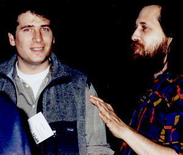 The discussion went over time by about 20 minutes. And it was passionate. Poor Bruce hand to get up in the middle of it to defend his award given to the city assembly speaker declaring that the tax break was not new, but a "straighting out of the rules", since all manufacturing equipment bought in NYC pays no tax. Those well worn issues of how one make money with open source technology were batted back and forth and Richard always won the argument. Gerry, IBI's CEO, said at one point that SAP, the second largest software company in the world, does not give away its software for free, and it never will. SAP customers pay lots of money to buy their software and don't want it to be free. Richard responds by saying that he is going to write a GPL'ed version of the software SAP sells. It will take time, but there will be a freely, source code distributeable version available sometime in the future. How can you argue with that. As for the ICQ developer, Richard was going to write an ICQ server equivalent and GPL it. This made John Borthwick sit back in his chair and exhale. The fact is, Richard stands on the moral high ground with his GNU Public License. And no one, mind you, no one, can stand higher than him on this issue. He has taken the freedom of source code distribution via GPL and has turned it into a powerful venue to advance social justice. And the power behind Richard's morality is nothing other than the unhindered flow of ideas over the Internet. Richard knows this, he mentioned something about working together to make sure the commercialization of the Internet does not hinder this freedom of information exchange. This also ties in with the comment made at lunch about how Stalin, who was the mid 20th centry Russian one man establishment, was afraid of losing control over his citizens by the installation of phones in Moscow.
The discussion finally ended. I went up on stage to see if I could get in on some of the post panel discussion groups. I noticed Richard was being sought after by another female journalist, this time working for Wired. He was in the process of giving his card to her and it seemed like this time he was going to grant an interview. I had a hard time trying to get into any of the conversations and figured that it was time to go home, which is what I did. The rain awaited me, as I left building C of the Fashion Institute of Technology. I quickly walked up 7th avenue to catch the express back out to Ronkonkoma, my Long Island destination. As I was on my way home, I stood in a crowed train cabin, the windows fogging up due to the human density, as the train rocked back and forth on its way east. This quiet time gave me a chance to go over the day's events. On thing is for certain. The trip was well worth it. I thanked the free software gods for tearing me away from the PHENIX timing system for one day. The final panel discussion ended with the same question put to each of the panelists. "Where do you see the Internet in 5 years?" To me, this is the unanswerable question. No one knows. At the beginning of this century, when new models of the atom were being developed by Rutherford, Bohr and others, no one knew that their work would lead to something as powerful and destructive as the nuclear weapon. In the case of the forecasting "the Internet", looking back will not tell you where we are going or will end up. The only thing we can do, is stay informed of what is going on now and work with the new ideas which are presented to us by our peers. Those who do this, will be the "Internet pioneers". And what strikes me most, by the discussions during the day, is that time and time again, the "establishment" were not adapting to new ideas. IBM being the one exception. The recording industry is one example. Gerry, the CEO of IBI, who mocked Stallman with his new/GNU joke and the suits in the audience who wanted to know who they were going to sue, are all in for a big fall. On the other hand, those who understand what it means to have the freedom of modifying the source, have the future in their hands and the Internet will be theirs for the taking.
This e-mail is from Richard Stallman himself. He wants to clarify some points I wrote in my article. Click here for further details.
Original article can be found at http://ssadler.phy.bnl.gov/~adler/Stallman/Stallman.html